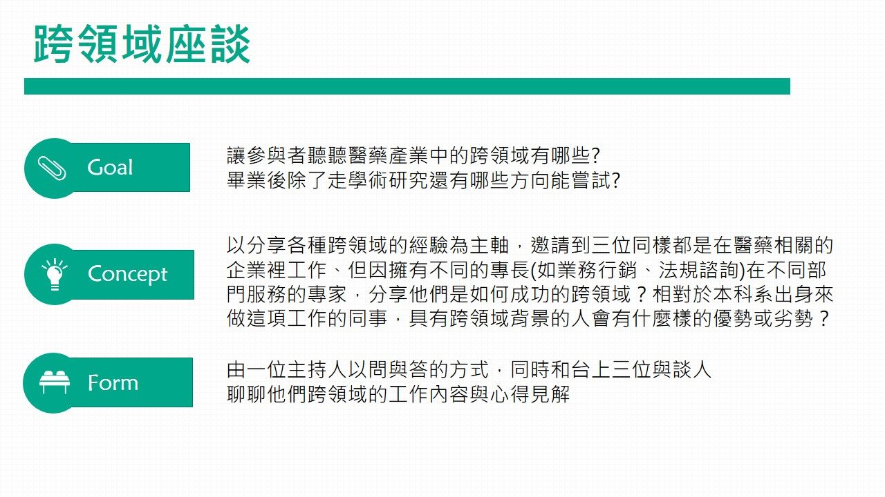

關於2018學術沙龍
這次我們將原本的學術沙龍拆成三塊：
「學術演講」、「跨領域座談」、「學長姐經驗分享」




這次我們將原本的學術沙龍拆成三塊：
「學術演講」、「跨領域座談」、「學長姐經驗分享」
台灣大師級醫材專家帶您從大眼光看未來
王友明，陽明大學醫學系、陽明大學生理所博士班。現為高雄長庚醫院放射腫瘤科主治醫師，並擔任實習及住院醫師教學負責人。除放射腫瘤科學術及臨床經驗外，亦擅長臨床數據蒐集、分析與應用、臨床醫材開發及前瞻性臨床研究。
此外，王醫師於2015年透過Stanford-Taiwan Biomedical (STB) Program前往矽谷的史丹福大學從事訪問研究，成為2015年的STB Fellow。

隨著醫療手術的進步，微創及顯微手術已成為主流，微創手術具有傷口小、感染率低及復原快等優點，不過醫生卻需要較長的訓練時間，才能有足夠的經驗來進行微創及顯微手術。本次會思考如何透過「整合式醫療設備結合科技輔助手術流程」的概念，如何運用最新電腦科技、影像處理技術及光學設計來開發出符合臨床需求的醫療設備與系統。
我們邀請到微創手術的人才劉楷哲 博士！來跟我們談談微創手術跟虛擬實境的搭配與應用！
大部份的惡性癌常有血管供輸它，能夠大量吸取身體內的養分來加速成長；另一面來說，也就是把血管塞掉，腫瘤就會餓死。 因此栓塞技術的原理簡單地說就是利用「超選擇性」導管術，把各種栓塞劑直接打進腫瘤來切斷其血管供輸而得到腫瘤壞死的療效。
栓塞最早期運用在內臟出血的治療，比如胃潰瘍出血；用於腫瘤治療是後來才發展出來的。你有想過為什麼栓塞治療可以越來越準確嗎?邀請到在醫事檢驗與生醫材料的跨領域研究有成的李明偉教授，來為我們說明醫材在癌症栓塞療法之應用！
資深跨領域專家帶和您聊聊「跨領域」這事
醫藥產業這個領域非常廣闊，不僅代表著我們有很多東西能學習，
也代表我們能從各方面培養自己某些「帶得走的能力」，尤其在該產業蓬勃發展之時，
有想法、敢踏出去的人更是非常有優勢！
由大學畢業不久的學長姐、親述出社會的衝擊、回顧在學校何者才為重要的

大學畢業後就業
x
國內研究所就讀
x
出國研究所就讀
畢業後...
取得藥師執照後的下一步？
未來要進醫院還是藥廠？
工作環境的差別有什麼？
我、適合哪一種？